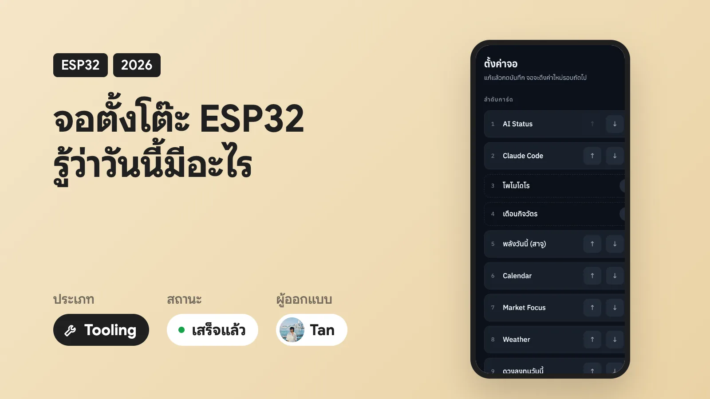
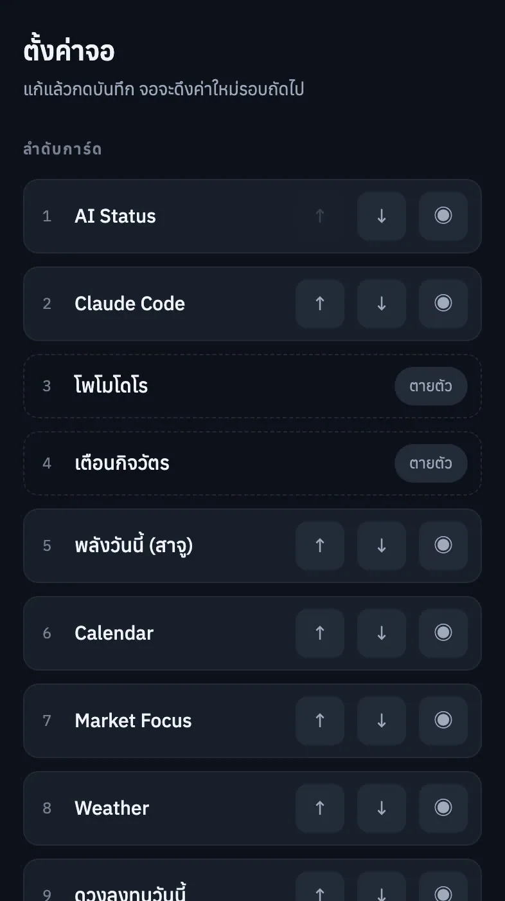
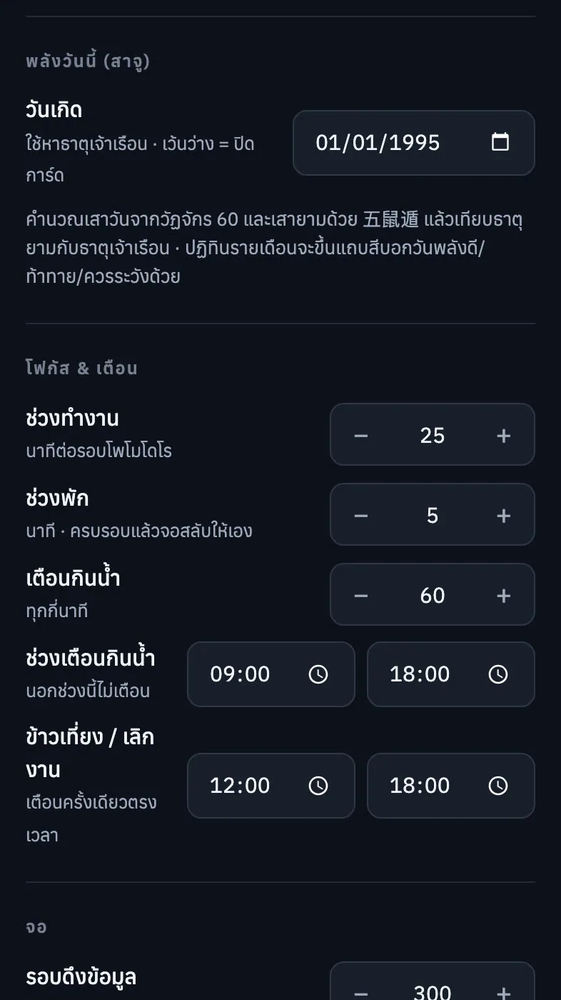
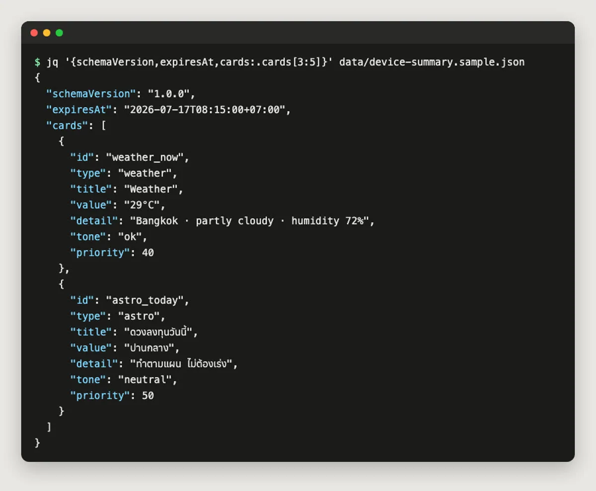
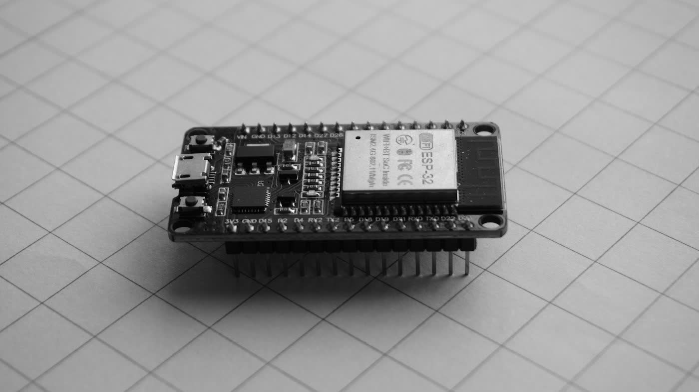
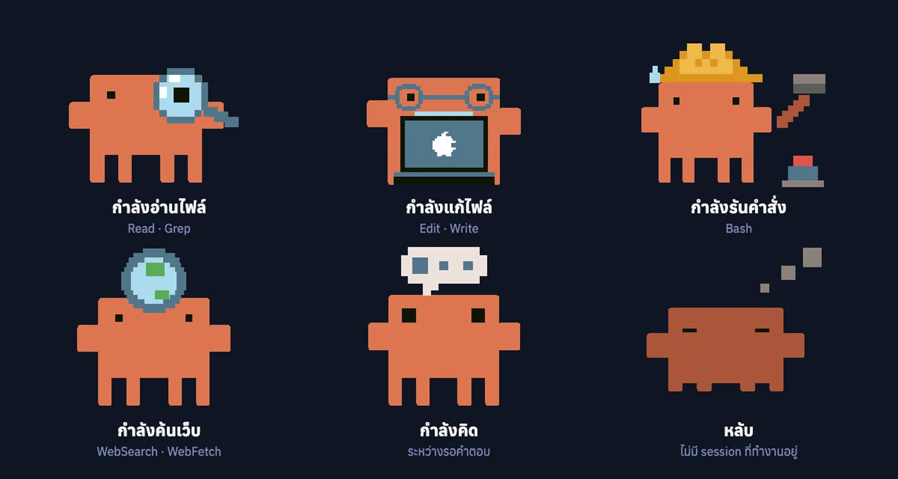
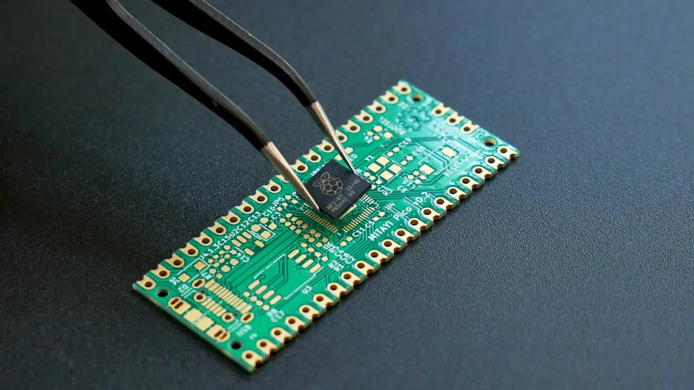
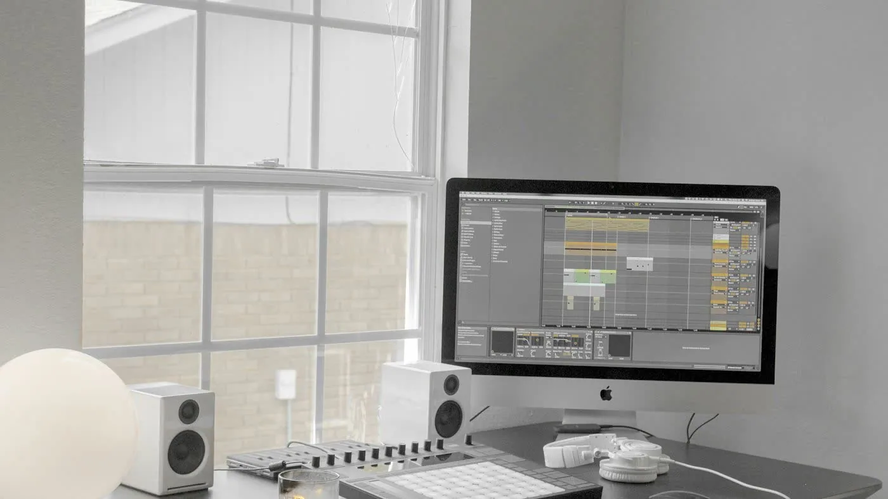
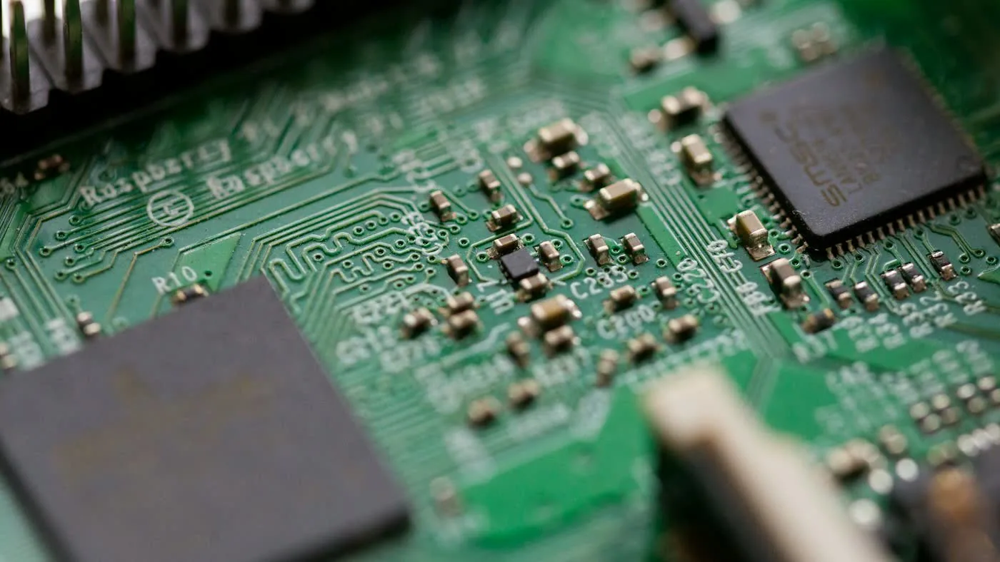

TanPlanet Live
จอตั้งโต๊ะ ESP32 ส่วนตัว ที่เปลี่ยนการเปิด 6 แอปทุกเช้า ให้เหลือแค่ชำเลืองมองจอข้างคีย์บอร์ด — ฮาร์ดแวร์ ฿640 หนึ่งบอร์ด กับ backend Node ที่รันอยู่บน Mac เครื่องเดิม ไม่มีคลาวด์ ไม่มี key ในบอร์ด ข้อมูลไม่ออกนอกบ้าน

จอ 3.5" ราคา ฿640 บนโต๊ะทำงาน ที่ดึงปฏิทินไทย จันทรคติ อากาศ ดวงลงทุน พอร์ตหุ้น โควตา AI และสถานะ Claude Code มาเรียงเป็นการ์ดแตะดูได้ — โดยให้ ESP32 เป็นแค่ "จอ" ส่วนสมองอยู่บน Mac
ปัญหาที่เจอ
ข้อมูลที่ต้องดูทุกเช้ามีไม่กี่อย่าง แต่มันกระจายอยู่คนละที่ และไม่มีอันไหน "อยู่ตรงหน้า" ตลอดเวลา
ทุกเช้าต้องเปิด 6 อย่าง — ปฏิทินดูวันพระ, แอปอากาศ, พอร์ตหุ้นใน Dime, การ์ดโค้ชจาก LINE, เช็คโควตา Claude เหลือเท่าไร, แล้วดูว่า agent ที่สั่งไว้ทำอะไรอยู่ ทั้งหมดนี้คือข้อมูล "ชำเลืองดู" ไม่ใช่ข้อมูลที่ต้องเปิดแอปมานั่งอ่าน — แต่บนคอมมันโดนหน้าต่างอื่นทับตลอด
ข้อมูลกระจาย 6 แอป แต่ละอันดูแค่ 3 วินาที
อากาศ / วันพระ / ราคาหุ้นที่เฝ้า / โควตา AI — ข้อมูลที่ใช้เวลาดูรวมกันไม่ถึงนาที แต่ต้องปลดล็อกมือถือ เปิดแอป สลับแท็บ ทุกวัน
Dashboard บนจอคอม = ไม่มีอยู่จริง
เปิด dashboard ไว้อีกแท็บ สุดท้ายก็โดนหน้าต่างงานทับ ข้อมูลที่ต้อง "ชำเลืองเห็น" ต้องมีพื้นที่ของตัวเองที่ไม่แย่งกับงาน
โมดูลจอสำเร็จรูปพูดไทยไม่ได้
เฟิร์มแวร์สำเร็จรูปของจอ ESP32 แทบทั้งหมดมีแต่ฟอนต์ละติน — ภาษาไทยออกมาเป็นกล่องสี่เหลี่ยม และวรรณยุกต์ซ้อนผิดตำแหน่ง
ESP32 คิดเองไม่ไหว
คำนวณดวงสุริยยาตร์ เรียก AI สรุป อ่านโควตา OAuth — งานพวกนี้กิน RAM และต้องใช้ secret ซึ่งไม่ควรฝังในบอร์ดที่วางอยู่บนโต๊ะ
เปลี่ยนวง Wi-Fi ทีต้อง flash ใหม่ที
เฟิร์มแวร์ที่ hardcode IP ของ backend ไว้ พอ Mac ย้าย IP หรือเปลี่ยนเราเตอร์ จอก็ตายเงียบ ต้องต่อสาย USB มา flash ใหม่ทุกครั้ง
วิธีแก้ปัญหา
แยกให้ชัดว่าอะไรคือ "จอ" อะไรคือ "สมอง" แล้วให้ทั้งสองคุยกันด้วยสัญญาข้อมูลเดียว
ESP32 เป็น thin client ไม่ใช่สมอง
Backend บน Mac รวมข้อมูลทุกแหล่ง คำนวณให้เสร็จ แล้วส่ง JSON การ์ดสั้น ๆ ให้จอวาด — เฟิร์มแวร์ไม่ต้องรู้จัก API ไหนเลย และไม่มี key อยู่ในบอร์ด
ทุกอย่างคือ "การ์ด" หน้าตาเดียวกัน
ไม่ว่าจะอากาศ หุ้น ดวง หรือโควตา AI ทุกใบใช้สัญญาเดียวกัน id / type / title / value / detail / tone / priority — เพิ่มการ์ดใหม่ = เพิ่ม 1 ฟังก์ชันใน backend ไม่ต้องแตะจอ
ตั้งค่าจากมือถือ ไม่ต้อง flash
หน้า /manage จัดลำดับการ์ด ซ่อน/แสดง เลือกหุ้นที่เฝ้า ตั้งเวลาโพโมโดโร ความสว่างกลางวัน-กลางคืน — จอดึง config รอบถัดไปแล้วเปลี่ยนตามทันที
ฟอนต์ไทยเจนเอง พร้อมวรรณยุกต์ยกสูง
สร้าง bitmap font จาก Anuphan 5 ขนาดเข้าเฟิร์มแวร์ แล้วทำ glyph วรรณยุกต์ตำแหน่งสูงเก็บใน Private Use Area เอง เพราะ LVGL ไม่อ่านตาราง GPOS ของ OpenType
หา backend ด้วยชื่อ ไม่ใช่ IP
จอ resolve Workspace-3.local ผ่าน mDNS แล้วแคช IP ไว้ — ย้ายเราเตอร์ เปลี่ยนวง Wi-Fi หรือ Mac ได้ IP ใหม่ ก็ยังหากันเจอโดยไม่ต้องต่อสาย


/manage ที่เปิดจากมือถือ — เรียงการ์ด ซ่อนการ์ด ตั้งโพโมโดโรและความสว่าง แล้วจอเปลี่ยนตามรอบถัดไป (ภาพจากเครื่องจริง ข้อมูลส่วนตัวเปลี่ยนเป็นค่าตัวอย่าง)วิธีทำงาน — 4 จังหวะ
จากแหล่งข้อมูลดิบ ถึงการ์ดที่แตะดูได้บนจอ ใช้เวลารอบละ 60 วินาที

รวมของ
Backend ดึงอากาศ ปฏิทิน .ics ราคาหุ้น ดวง โควตา Claude และหางไฟล์ session ของ agent
ย่อยเป็นการ์ด
คำนวณให้จบบน Mac แล้วเหลือแต่ข้อความสั้น + ตัวเลขที่จอเอาไปวาดได้ทันที
จอดึงแล้ววาด
ESP32 ยิง HTTP ทุก 60 วิ (การ์ด Claude แยกท่อ 10 วิ) แล้ว render ด้วย LVGL
แตะเพื่อเจาะ
แตะการ์ด → หน้า detail กราฟราคา กราฟฝนรายชั่วโมง ปฏิทินเดือน หรือ price ladder
Tech Stack & Architecture
ไม่มีคลาวด์ ไม่มีบัญชีผู้ใช้ ไม่มี key ในบอร์ด — ทุกอย่างจบใน LAN บ้าน

ESP32-035 มีจอ ทัช LDR RGB และ audio amp มาในบอร์ดเดียว ฿640 — ไม่ต้องต่อ sensor เพิ่มเลยสักตัว · LVGL 9 ให้ scroll/touch/animation ระดับใช้งานจริงบน MCU · Backend เป็น Node ล้วน ไม่มี dependency รันด้วย launchd สตาร์ตเองตอนเปิดเครื่อง · วางไว้ใน LAN ทำให้เข้าถึงไฟล์ในเครื่อง (session ของ agent, ข้อมูลพอร์ต) ได้โดยไม่ต้องอัปอะไรขึ้นคลาวด์
สิ่งที่สร้าง — การ์ด 12 ใบ
ทุกใบเป็นข้อมูลจริง ไม่มี mock เหลืออยู่บนจอ

นาฬิกา + วันที่ไทย
NTP sync แล้ววาดด้วยฟอนต์ตัวเลข 48px แยกต่างหาก + วันที่ พ.ศ. เต็มรูปแบบบนแถบหัวจอ
ปฏิทินรายเดือน
เลื่อนดูเดือนอื่นได้ · จุดน้ำเงินใต้วันพระ · เลขแดงวันหยุดราชการ · ดึงปฏิทินภายนอกผ่าน .ics ได้
จันทรคติ / วันพระ
คำนวณข้างขึ้นข้างแรมด้วยสูตรสุริยยาตร์ในฝั่ง backend เอง ไม่พึ่ง API ภายนอก
Weather แบบ Google Weather
Open-Meteo + กราฟโอกาสฝนรายชั่วโมงที่วาดเอง + ไอคอนสไตล์ Google ฝังเป็น C array RGB565A8
ดวงลงทุนวันนี้
ต่อกับ Thai Astrology engine ของโปรเจกต์ MegaCoach — ให้คะแนน 0-100 พร้อมคำอธิบายสั้น
พลังวันนี้ (สาจู)
เขียน engine เองใน saju.mjs ตรวจตรงกับแอปอ้างอิงทุกช่วงยาม — กราฟพลังรายยามเป็นเส้นต่อจุด
Market Focus
ราคาหุ้นที่เฝ้าพร้อมกราฟ 1 เดือน กด ◄ ► เลื่อนดูได้ทุกตัว เลือกรายชื่อจากหน้า manage
Monthly Plan & Price Ladder
แสดงโซนเข้า / stop / target เทียบกับราคาปัจจุบันเป็นบันได เห็นทันทีว่าอยู่ตรงไหนของแผน
North Star
เป้าหมายระยะยาวและหลักการคุมความเสี่ยง Fear of Ruin > FOMO ที่ต้องเห็นทุกวัน
AI Status
โควตา Claude รอบ 5 ชม. และ 7 วัน เป็นแถบเส้น + ขีด pace — สีเปลี่ยนเมื่อ % ใช้ไปแซงเวลาที่ผ่านไป
Claude Code + มาสคอต
อ่านหางไฟล์ session ว่า agent กำลังใช้เครื่องมืออะไร แล้วให้มาสคอตทำท่าตามนั้น รีเฟรชทุก 10 วินาที
โพโมโดโร + เตือนกิจวัตร
จับเวลาทำงาน/พัก และเตือนกินน้ำ ข้าวเที่ยง เลิกงาน — แตะตอนกระพริบเพื่อปิดจบในจังหวะเดียว
หน้าตาบนจอ
320×480 แนวตั้ง — แถบหัวคงที่ ด้านล่างเป็นการ์ดที่เลื่อนและแตะได้
แถบหัวไม่เปลี่ยนตำแหน่งเลยตลอดวัน เพื่อให้ "ชำเลืองเห็น" เวลาและอากาศได้โดยไม่ต้องโฟกัส ส่วนการ์ดด้านล่างเรียงตาม priority ที่ตั้งจากมือถือได้
Hack กับปัญหา
7 โจทย์ที่เจอตอนของจริงอยู่บนโต๊ะ — ส่วนใหญ่ไม่มีในเอกสาร ต้องไล่เอง

กดแล้วค้าง ทั้งที่ heap ว่าง 165KB
แตะการ์ดแล้วจอค้างเป็นระยะ ตอนแรกนึกว่า RAM หมด แต่ ESP รายงาน heap ว่างตั้ง 165KB
LV_MEM_SIZE = 32KB และเต็มไปแล้ว 89% → เปลี่ยนไปใช้ LV_STDLIB_CLIB ให้ LVGL ขอ memory จาก heap จริงแทน — บทเรียน: บน MCU ต้องถามว่า "หน่วยความจำก้อนไหนเต็ม" ไม่ใช่แค่ "ว่างเท่าไร"บอร์ดรีบูตตอนกดเข้าหน้า detail
เปิดหน้า detail ของการ์ดมาสคอตทีไรบอร์ดรีบูตทันที ทั้งที่ heap เหลือเฟือ 163KB
วรรณยุกต์ไทยซ้อนผิดตำแหน่ง
คำที่มีสระบนซ้อนวรรณยุกต์ เช่น "ที่" ออกมาชนกันเป็นก้อน เพราะ LVGL ไม่อ่านตาราง GPOS ของ OpenType
make_thai_font.py เจน bitmap font 5 ขนาดจาก Anuphan เอง แล้วสร้าง glyph วรรณยุกต์ตำแหน่งยกสูงเก็บใน Private Use Area ตอน render ก็ map อักขระเป็นตัว PUA เมื่อเจอบริบทที่ต้องยก — ได้ตำแหน่งถูกโดยไม่ต้องมี shaping engineกล่องสี่เหลี่ยมบนจอ ไม่ใช่ loading
ตัวเลขนาฬิกาบางสถานะขึ้นเป็นกล่องสี่เหลี่ยม — ไล่หา race condition ของการโหลดข้อมูลอยู่นาน
0-9 : ° พอส่ง --:-- เข้าไป ขีดจึงกลายเป็นกล่อง → เปลี่ยนเป็นส่งสตริงว่างตอนยังไม่มีเวลา — บทเรียน: กล่องสี่เหลี่ยม = ฟอนต์ ไม่ใช่ stateจอไม่มีข้อมูล แต่ backend ไม่ได้ล่ม
จอขึ้น error ทั้งที่ curl จาก Mac ได้ 200 ปกติ — เสียเวลาไล่หาสาเหตุที่ฝั่ง backend อยู่นาน
MDNS.begin() เลย lwip จึง resolve ชื่อ .local ไม่ได้ → ใช้ MDNS.queryHost() เอา IP มาเสียบแล้วแคชไว้ — หลุมที่ทำให้หลงทาง: curl ชื่อ .local จาก Mac เองมันวิ่งเข้า 127.0.0.1 ต้อง curl ด้วย LAN IP ถึงจะรู้ความจริงชื่อสภาพอากาศยาวเกินไปทับนาฬิกา
ใส่ LV_LABEL_LONG_DOT แล้วยังทับอยู่ เพราะ LVGL จะ wrap ขึ้นบรรทัดสองก่อน แล้วค่อยใส่จุดไข่ปลา
setThaiTextFit() วัดความกว้างจริงด้วย lv_text_get_size แล้วถอยข้อความทีละตัวอักษร UTF-8 จนพอดีกรอบ — ห้ามถอยทีละไบต์ เพราะจะตัดกลางอักขระไทยแล้วได้ขยะการ์ด Claude ช้าไป 5 นาที
การ์ดที่บอกว่า agent กำลังทำอะไร ต้องสด แต่มันรออัปเดตพร้อมรอบใหญ่ 60 วินาที/5 นาที ทำให้ข้อมูลตกยุคตลอด
/api/claude ที่ส่งเฉพาะการ์ดใบเดียว (~300 bytes) ทุก 10 วิ แล้วเขียนทับ label เดิมในที่ โดยจำ pointer ไว้ ไม่ lv_obj_clean ทั้งจอ — ถ้าล้างทั้งจอ scroll จะเด้งกลับหัวทุก 10 วินาทีDesign Decision ที่ตั้งใจเลือก
ขอบเขตที่จงใจ "ไม่ทำ" สำคัญพอ ๆ กับสิ่งที่ทำ

จอนี้ทำหน้าที่เดียว: แสดงผล — มันไม่คำนวณดวงเอง ไม่เรียก AI เอง ไม่เก็บ key ใด ๆ และไม่ต่อออกอินเทอร์เน็ตนอกจากไปหา backend ในบ้าน พอขอบเขตคมขนาดนี้ เฟิร์มแวร์ก็เหลือแค่ "ดึง JSON แล้ววาด" ซึ่ง debug ง่ายและพังยาก
จอ ไม่ใช่สมอง
logic หนักอยู่บน Mac จอแค่ดึง JSON มาวาด
ไม่มี key ในเฟิร์มแวร์
บอร์ดวางอยู่บนโต๊ะ ใครหยิบไปก็ไม่ได้อะไรติดมือ
อยู่ใน LAN เท่านั้น
ข้อมูลพอร์ตและ session ไม่ต้องขึ้นคลาวด์
config ไม่ต้อง flash
ปรับทุกอย่างจากมือถือ สาย USB เก็บเข้าลิ้นชักได้
Knowledge Domain ที่แข็งขึ้น
5 พื้นที่ความรู้ที่ระดับขยับขึ้นจริงจากการทำโปรเจกต์นี้

เข้าใจ object tree, style selector, scroll container, draw callback และวิธีอัปเดต widget ในที่โดยไม่สร้างใหม่ทั้งจอ — ซึ่งเป็นความต่างระหว่าง UI ที่ลื่นกับ UI ที่เด้ง บทเรียน: บน MCU การ "ไม่วาดใหม่" สำคัญกว่าการวาดให้สวย
รู้ว่า rendering ภาษาไทยต้องมี shaping (GPOS) ที่ LVGL ไม่มีให้ จึงต้องแก้ที่ชั้นฟอนต์เอง ด้วยการเจน glyph ยกสูงเข้า PUA และ map ตอน render บวกกับการจัดการ UTF-8 ที่ห้ามตัดกลางไบต์ บทเรียน: การรองรับภาษาไม่ใช่ฟีเจอร์ปลายทาง มันเป็นข้อจำกัดตั้งแต่ชั้นเลือกไลบรารี
เจอทั้งอาการ pool ของ LVGL เต็มขณะ heap ว่าง และ stack overflow ที่หน้าตาเหมือนรีบูตเฉย ๆ ทำให้อ่านอาการเป็นและวางขนาด draw buffer ได้ตามขอบเขต DRAM จริง บทเรียน: "RAM เหลือเท่าไร" เป็นคำถามที่กว้างเกินไปสำหรับงานฝังตัว
เข้าใจว่า .local ต้องมี responder ทั้งสองฝั่ง, อุปกรณ์ 2.4GHz กับ 5GHz อาจอยู่คนละ subnet จนคุยกันไม่ได้ และการทดสอบจากเครื่องตัวเองมักให้ผลลวง บทเรียน: ทดสอบจากมุมของอุปกรณ์ที่มีปัญหาเสมอ ไม่ใช่จากเครื่องที่สะดวก
การบังคับให้ทุกฟีเจอร์ลงในรูป "การ์ด" เดียวกัน ทำให้เพิ่มของใหม่ 12 อย่างโดยแทบไม่แตะเฟิร์มแวร์ และย้าย logic หนักไปอยู่ฝั่งที่แก้ง่ายกว่าเสมอ บทเรียน: ออกแบบสัญญาข้อมูลให้ดีตั้งแต่แรก คือการลดงาน flash ในอนาคต